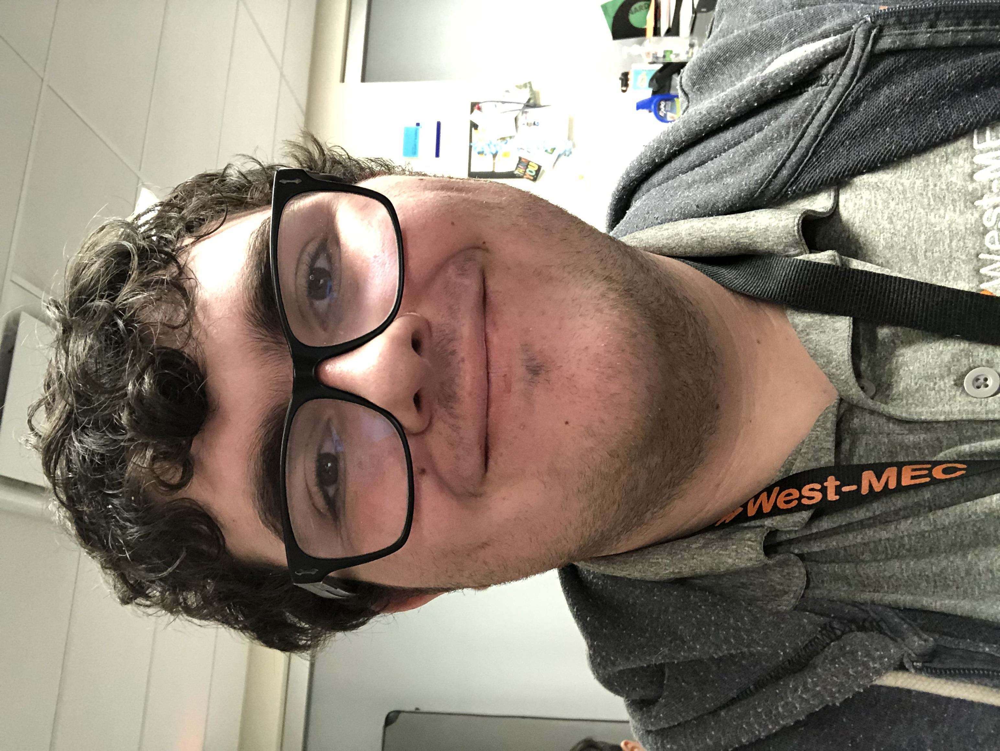
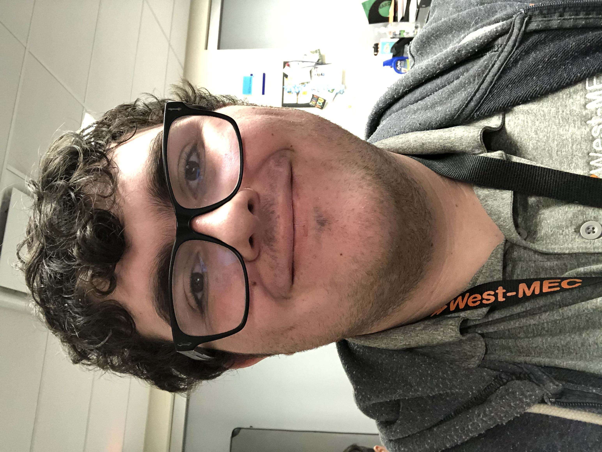

I am currently a Junior at Pinnacle Highschool and currently speaculize in physical art, Public speaking, and am a year one student in coding at West-Mec. Currently, I am the Class Representitive of highschool and work to help my fellow officers with preparing events, volentering my time to the class, and work on the FBLA chapter Tracker. I am in a family of 5 people, including me, and have two wonderful parents and two incredible brothers. I have been commended by my peers and aquantinces for my uplifting personality, hard working personality, and an polite attitude. My personal intrests include drawing fantasy and fictional charcters, videogames including Hallow Knight, Pokemon, and Bloons TD6, and absolutely love all kinds of Birds. My Style for websites and drawing is very geometric and include one primary color with several variations of that same color, also including all of my intrests. This althoguh is not a comprehensive list of everything I can do or am good at. I am willing to work with you to make your website how you invision it exactly, that was simply how I see things inside my own head.
I currently have great knowlage about teamwork, speaking my mind, and doing what is best for the team. I am currently a part of FBLA events including Impromptu speaking, FBLA Buisness Leader quiz, and Bisness ethics which help to refine my skills. Along with that I have worked a Busser shift at Brisams during the summer and have truly learned the gratification and hard work it takes to have a scusessful job and stand out amoung your peers. Althoguh up to this point I have had no prior coding experience, I am easily one of the most eager students to learn everything there is to know about making an incredible website. I am surrounded by a lot of high knowlage students that I challenge myself to keep up with every day. I will not have the absolute knowlage about coding yet, althoguh will not stop untill I get everything just right.
Phone Number-##########
West-Mec Email-##########
Personal Email-##########
GitHub Page-##########
Adress-##########
 
